SECCIÓN 9F
EQUIPO DE SONIDO
Precaución: Desconecte el cable negativo de la batería antes de desmontar o instalar cualquier unidad eléctrica o cuando exista la posibilidad de que una herramienta o equipo pueda entrar en contacto con bornes eléctricos expuestos. La desconexión de dicho cable ayudará a evitar lesiones personales y daños al vehículo. La llave de contacto debe estar en posición LOCK a menos que se indique lo contrario.
ESPECIFICACIONES
Especificaciones de apriete de la sujeción
Aplicación | N•m | Lb-pie | Lb-pulg. |
Tornillos del equipo de sonido | 2 | - | 18 |
Tornillos del altavoz delantero | 3 | - | 27 |
Tornillos de los altavoces traseros | 3 | - | 27 |
Tuercas de fijación de la anterna del techo | 3.2 | - | 28 |
ESQUEMAS Y DIAGRAMAS DE CABLEADO
Circuito del equipo de sonido
(Indicado para conducción a izquierdas, conducción a derechas similar)
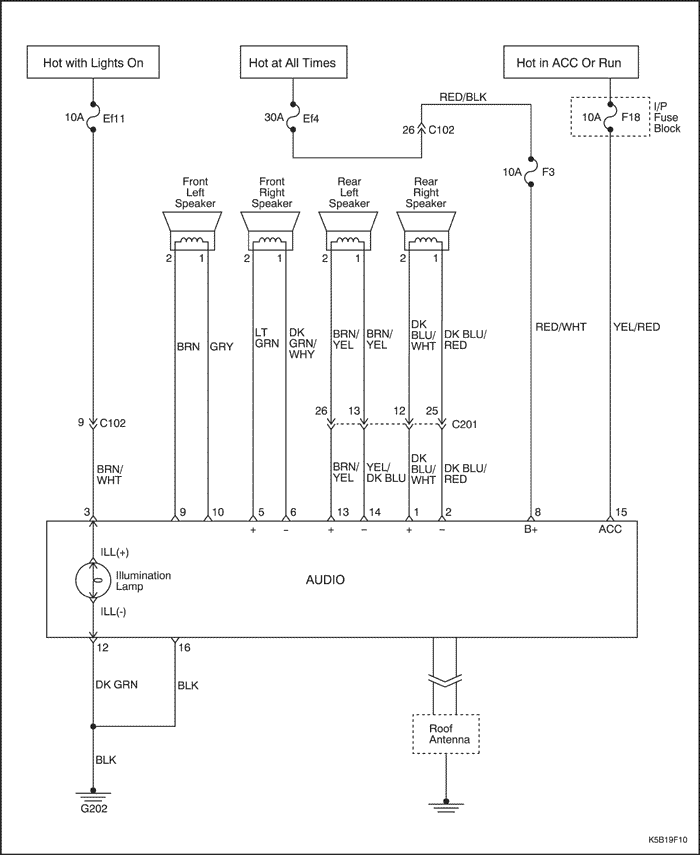


DIAGNÓSTICO
Radio CD estéreo AM/FM
El reproductor de CD no funciona, la radio AM/FM funciona perfectamente
| Paso | Medida | Valor(es) | Sí | No |
| 1 | Utilizando un CD de buena calidad, determine si el reproductor funciona mal o no funciona. ¿Funciona bien el reproductor de CD? | - | Vaya al Paso 2 | Vaya al Paso 3 |
| 2 | Informe al cliente de que el problema reside en el CD, no en el reproductor. ¿Ha sido informado el cliente? | - | Sistema OK | - |
| 3 | Compruebe si hay alguna obstrucción en el reproductor de CD, detrás de la tapa de la cinta. ¿Se encontró la obstrucción? | - | Vaya al Paso 4 | Vaya al Paso 6 |
| 4 | Compruebe si puede eliminarse la obstrucción. ¿Puede eliminarse la obstrucción? | - | Vaya al Paso 5 | Vaya al Paso 6 |
| 5 | Elimine la obstrucción. ¿Se ha realizado la reparación? | - | Sistema OK | - |
| 6 | Sustituya el reproductor de CD. ¿Se ha realizado la reparación? | - | Sistema OK | - |
La radio AM/FM no funciona
| Paso | Medida | Valor(es) | Sí | No |
| 1 | Compruebe los fusibles F18 y F3. ¿Están los fusibles F18 y F3 fundidos? | - | Vaya al Paso 2 | Vaya al Paso 3 |
| 2 | - Compruebe si hay algún cortocircuito y repárelo, si fuera necesario.
- Sustituya los fusibles fundidos.
¿Se ha realizado la reparación? | - | Sistema OK | - |
| 3 | - Utilice un voltímetro para comprobar la tensión de la batería en el fusible F18.
- Gire la llave de contacto a la posición ON y compruebe la tensión de la batería en el fusible F3.
¿Coincide la tensión de la batería con los valores especificados en los fusibles F18 y F3? | 11-14 V | Vaya al Paso 5 | Vaya al Paso 4 |
| 4 | Repare el circuito de alimentación de corriente a los fusibles. ¿Se ha realizado la reparación? | - | Sistema OK | - |
| 5 | - Desmonte el radiocasete.
- Gire la llave de contacto a la posición ON.
- Utilice un voltímetro para comprobar la tensión de la batería en los terminales 15 y 8 del conector del equipo de sonido.
¿La tensión de la batería coincide con el valor especificado en los terminales? | 11-14 V | Vaya al Paso 7 | Vaya al Paso 6 |
| 6 | Repare el circuito abierto entre el conector del equipo de sonido y el fusible. ¿Se ha realizado la reparación? | - | Sistema OK | - |
| 7 | Utilice un ohmímetro para comprobar el circuito de conexión a masa en el terminal 16 del conector del equipo de sonido. ¿Coincide la resistencia con los valores especificados? | ≈ 0 Ω | Vaya al Paso 9 | Vaya al Paso 8 |
| 8 | Repare el circuito de conexión a masa abierto entre el conector del equipo de sonido y la conexión a masa G202. ¿Se ha realizado la reparación? | - | Sistema OK | - |
| 9 | Sustituya el radiocasete. ¿Se ha realizado la reparación? | - | Sistema OK | - |
AM no funciona, FM funciona correctamente
| Paso | Medida | Valor(es) | Sí | No |
| 1 | Compruebe si el equipo de sonido funciona con normalidad. ¿No funciona en AM, pero el resto del equipo funciona perfectamente? | - | Vaya al Paso 2 | Sistema OK |
| 2 | Sustituya la radio. ¿Se ha realizado la reparación? | - | Sistema OK | - |
La radio FM no funciona, AM funciona correctamente
| Paso | Medida | Valor(es) | Sí | No |
| 1 | - Desenchufe el cable de la antena.
- Conecte la antena de prueba al cable.
- Compruebe la recepción de la radio en FM.
¿Funciona correctamente la radio en FM? | - | Vaya al Paso 2 | Vaya al Paso 3 |
| 2 | Sustituya la antena. ¿Se ha realizado la reparación? | - | Sistema OK | - |
| 3 | - Desmonte el radio casete del panel de instrumentos.
- Desenchufe el cable de la antena del equipo de sonido.
- Enchufe el cable de prueba al equipo de sonido.
- Compruebe la recepción de la radio en FM.
¿Funciona correctamente la radio en FM? | - | Vaya al Paso 4 | Vaya al Paso 5 |
| 4 | Sustituya el cable de la antena que une el equipo de sonido y la antena. ¿Se ha realizado la reparación? | - | Sistema OK | - |
| 5 | Sustituya el radiocasete. ¿Se ha realizado la reparación? | - | Sistema OK | - |
Altavoces
Los altavoces delanteros funcionan con distorsión o no funcionan, el resto del equipo de sonido funciona correctamente
| Paso | Medida | Valor(es) | Sí | No |
| 1 | - Gire la llave de contacto a la posición ON y encienda la radio.
- Compruebe si los altavoces delanteros funcionan con distorsión o no funcionan utilizando los controles de balance con todas las fuentes (AM, FM, cinta, CD).
¿Los altavoces delanteros funcionan con distorsión? | - | Vaya al Paso 2 | Vaya al Paso 4 |
| 2 | Compruebe si el altavoz o la zona de la puerta presentan daños, traqueteos o vibración. ¿La distorsión es causada por alguna pieza suelta o está en el altavoz? | - | Vaya al Paso 3 | Vaya al Paso 4 |
| 3 | Efectúe las reparaciones necesarias para sujetar los componentes que causan la distorsión. ¿Se ha realizado la reparación? | - | Sistema OK | - |
| 4 | - Desmonte los altavoces delanteros y desenchufe su conector.
- Compruebe con un ohmímetro si hay alguna derivación a masa en los cables de los altavoces.
¿Indica el ohmímetro el valor especificado? | ∞ | Vaya al Paso 6 | Vaya al Paso 5 |
| 5 | Repare el cortocircuito entre el conector de los altavoces delanteros y el conector de la radio. ¿Se ha realizado la reparación? | - | Sistema OK | - |
| 6 | Sustituya el altavoz que causa la distorsión por un altavoz en buen estado. ¿Ha desaparecido la distorsión? | - | Vaya al Paso 7 | Vaya al Paso 8 |
| 7 | Sustituya el altavoz. ¿Se ha realizado la reparación? | - | Sistema OK | - |
| 8 | Sustituya el radiocasete. ¿Se ha realizado la reparación? | - | Sistema OK | - |
Los altavoces traseros funcionan con distorsión o no funcionan, el resto del equipo de sonido funciona correctamente
| Paso | Medida | Valor(es) | Sí | No |
| 1 | - Gire la llave de contacto a la posición ON y encienda la radio.
- Compruebe si los altavoces traseros funcionan con distorsión o no funcionan usando los controles de balance con todas las fuentes (AM, FM, cinta, CD).
¿Funcionan los altavoces traseros con distorsión? | - | Vaya al Paso 2 | Vaya al Paso 4 |
| 2 | Compruebe si los altavoces, el capó trasero o la zona del maletero presentan daños, traqueteos o vibración. ¿La distorsión es causada por alguna pieza suelta o está en el altavoz? | - | Vaya al Paso 3 | Vaya al Paso 4 |
| 3 | Efectúe las reparaciones necesarias para sujetar los componentes que causan la distorsión. ¿Se ha realizado la reparación? | - | Sistema OK | - |
| 4 | - Desconecte los altavoces traseros.
- Compruebe con un ohmímetro si hay alguna derivación a masa en los cables de los altavoces.
¿Indica el ohmímetro el valor especificado? | ∞ | Vaya al Paso 6 | Vaya al Paso 5 |
| 5 | Compruebe si hay algún cortocircuito entre el conector de los altavoces traseros y el conector de la radio. ¿Se ha realizado la reparación? | - | Sistema OK | - |
| 6 | Sustituya el altavoz que causa la distorsión por un altavoz en buen estado. ¿Ha desaparecido la distorsión? | - | Vaya al Paso 7 | Vaya al Paso 8 |
| 7 | Sustituya el altavoz. ¿Se ha realizado la reparación? | - | Sistema OK | - |
| 8 | Sustituya el equipo de sonido. ¿Se ha realizado la reparación? | - | Sistema OK | - |
MANTENIMIENTO Y REPARACIÓN
SERVICIO EN EL VEHÍCULO
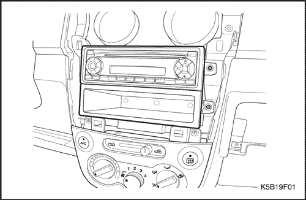
Equipo de sonido
Procedimiento de desmontaje
- Desconecte el cable negativo de la batería.
- Desmonte la moldura del cuadro. Consulte la sección 9E, Instrumentación/información para el conductor.
- Quite los tornillos y desmonte el equipo de sonido.
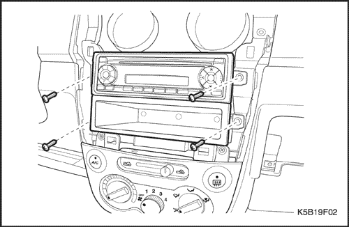
Procedimiento de montaje
- Enchufe el conector eléctrico y conecte el cable de la antena.
- Monte el equipo de sonido con sus tornillos.
Apretar
Apriete los tornillos del equipo de sonido hasta 2 N•m (18 lb-pulg.).
- Monte la moldura del cuadro de instrumentos. Consulte la sección 9E, Instrumentación/información para el conductor.
- Conecte el cable negativo de la batería.
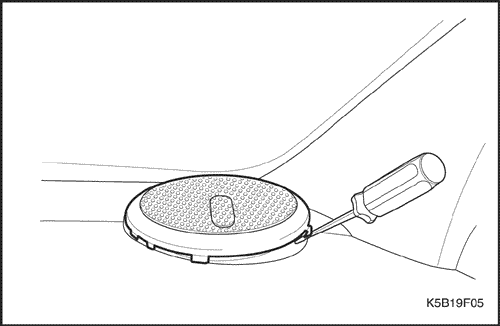
Tapas de los altavoces delanteros
Procedimiento de desmontaje
- Desmonte las tapas de los altavoces delanteros.
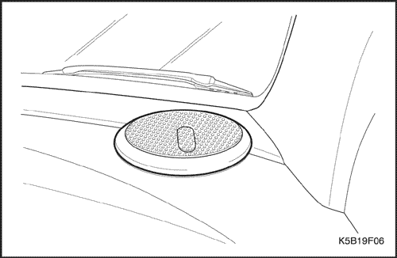
Procedimiento de montaje
- Monte las tapas de los altavoces delanteros.
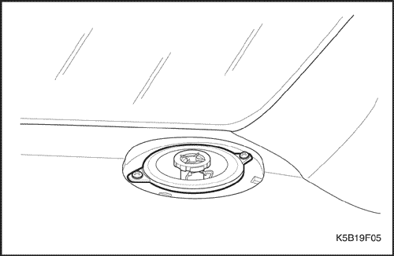
Altavoces delanteros
Procedimiento de desmontaje
- Desconecte el cable negativo de la batería.
- Desmonte las tapas de los altavoces delanteros. Consulte el apartado "Tapas de los altavoces delanteros" de esta sección.
- Quite los tornillos y desmonte el altavoz.
- Desenchufe el conector eléctrico.
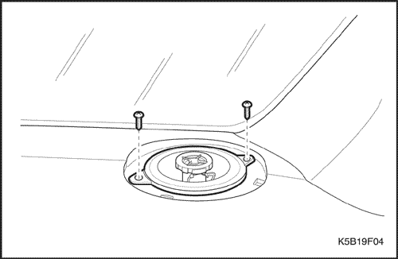
Procedimiento de montaje
- Enchufe el conector eléctrico.
- Monte el altavoz delantero con sus tornillos.
- Monte las tapas de los altavoces delanteros. Consulte el apartado "Tapas de los altavoces delanteros" de esta sección.
- Conecte el cable negativo de la batería.
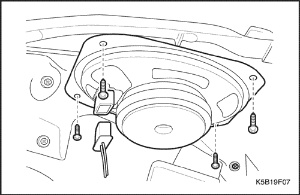
Altavoces traseros
Procedimiento de desmontaje
- Desconecte el cable negativo de la batería.
- Abra el portón trasero.
- Desmonte el altavoz trasero de la bandeja lateral trasera.
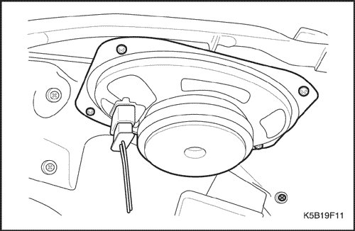
Procedimiento de montaje
- Monte el altavoz trasero en la bandeja lateral trasera con sus tornillos.
- Enchufe el conector eléctrico.
- Conecte el cable negativo de la batería.
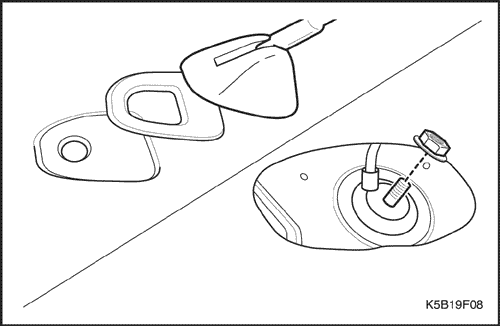
Antena trasera
Procedimiento de desmontaje
- Desconecte el cable negativo de la batería.
- Desmonte la luz de cortesía interior. Consulte la Sección 9B, Sistemas de alumbrado.
- Desmonte la antena del techo.
- Quite el tornillo desde el interior del vehículo.
- Desmonte la antena del techo.
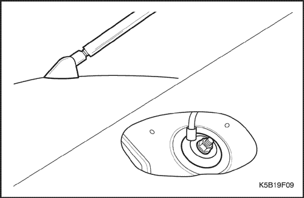
Procedimiento de montaje
- Monte la antena del techo con su tornillo.
Apretar
Apriete el tornillos de fijación de la antena de techo hasta 3 N•m (27 lb-pulg.).
- a. Tornillo de fijación de la antena del techo.
- Monte la luz de cortesía interior. Consulte la Sección 9B, Sistemas de alumbrado.
- Conecte el cable negativo de la batería.
DESCRIPCIÓN GENERAL Y FUNCIONAMIENTO DEL SISTEMA
RDS (Sistema de memorización de la radio)
Una vez que el usuario configura sus preferencias en el sistema de memorización de la radio (RDS), sólo hace falta pulsar un botón para seleccionar una emisora predeterminada.
Con el RDS
- Con la llave de contacto en la posición I ó II, encienda la radio. En ese momento, aparecerá en la pantalla la palabra "CODE".
- Pulse el botón P-UP (arriba) hasta que se muestre en la pantalla el primer dígito correcto del código.
- Pulse el botón P-DN (abajo) para buscar el segundo dígito y, a continuación, pulse de nuevo P-UP para introducir el segundo dígito correspondiente.
- Repita los pasos dos y tres para introducir el tercer y cuarto dígito de igual forma.
- Tras introducir el código de seguridad de cuatro dígitos correcto, pulse el botón TP. El mensaje "CODE OK" aparecerá brevemente en la pantalla de la radio y el sistema estará listo para su uso.
Altavoces delanteros y traseros
Todos los sistemas de sonido utilizan cuatro altavoces: dos montados en las puertas delanteras y dos montados en los laterales de la bandeja trasera.
Antena del techo
La antena va colocada en el techo y está diseñada para poder separar la varilla de la antena de su base. Antes de lavar el vehículo debería quitarse la varilla de la antena con el objeto de no dañar la pintura. No se puede ajustar la antena de techo.
Conservación de las casetes y del reproductor de cintas
El cabezal y el rodillo guía son dos piezas del reproductor de cintas que se deben limpiar. Esta limpieza debe efectuarse cada 100 horas de funcionamiento del casete.
Para realizar esta limpieza, utilice un algodón impregnado en alcohol.
También se puede utilizar un kit de limpieza para la cabeza reproductora y el rodillo guía. Para limpiar el reproductor de cintas, siga las instrucciones del equipo de limpieza.
No toque la cabeza reproductora con herramientas imantadas. Si se imanta la cabeza se producirá una degradación de las cintas en el reproductor. No existe ninguna labor de mantenimiento a realizar en los casetes. El fabricante del casete es el responsable de la garantía del mismo. Guarde los casetes lejos de fuentes de calor extremo y de la luz directa del sol.
Conservación de los discos compactos
Maneje los discos con cuidado. Guarde los discos en cajas protectoras y alejados del sol, el calor y el polvo. Si se ensucia su superficie, humedezca un trapo limpio y suave en una solución detergente neutra y limpie el disco con suavidad. Los minidiscos (de unas tres pulgadas de diámetro) no podrán ser expulsados y, por lo tanto, no deberán utilizarse.